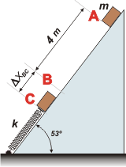

NO ME SALEN
PROBLEMAS RESUELTOS DE FÍSICA DEL CBC
(Trabajo y energía)
|
|

|
Adicional NMS 22* - Un paquete de 2 kg se suelta en una pendiente de 53° a 4 m de un
resorte largo, cuya constante de fuerza es de 120 N/m y está sujeto a la base
de la pendiente. El coeficiente de fricción entre el paquete y la pendiente vale 0,5. La masa del resorte es despreciable. a) ¿Qué rapidez
tiene el paquete justo antes de llegar al resorte? b) ¿Cuál es la compresión
máxima del resorte? c) Al rebotar el paquete hacia arriba, ¿qué tanto se acerca
a su posición inicial? |
 |
|
Antes de intentar resolver este ejercicio te conviene haber cocinado este otro, ya que aunque este es un poco más rebuscado, incluye la misma problemática.
|

|
La pregunta a) es bastante sencilla. Pongámosle nombre a las situaciones de las que vamos a hablar, así nos ordenamos.
Llamemos A al momento en el que el bloque se suelta y B al instante en que llega a tocar al resorte.
La diferencia de energía mecánica entre esos dos estados es igual al trabajo del rozamiento.
WrozAB = EMB — EMA
|
|
|
|
Vayamos por partes: el trabajo del rozamiento es igual a la fuerza de rozamiento por el desplazamiento, ΔXAB, por el coseno del ángulo que forman la fuerza y el desplazamiento, o sea, —1. Y la fuerza de rozamiento, Roz, es igual a la fuerza normal al plano (que a su vez es igual a la componente normal al plano del peso del cuerpo) por el coeficiente de rozamiento.
WrozAB = — μ . Roz . ΔXAB
WrozAB = — μ . m . g . cos 53° . ΔXAB
Vamos a las energías mecánicas. En A es puramente potencial, ya que su velocidad en ese punto es nula. En B es suma de la cinética más la potencial.
EMB — EMA = ½ m vB² + m g hB — m g hA
EMB — EMA = ½ m vB² + m g (hB — hA)
La diferencia de alturas no es otra cosa que ΔXAB por el sen 53° (para darte cuenta de esto basta con que traces un triángulo rectángulo cuyos vértices agudos sean A y B). Y no pierdas de vista que es un valor negativo (el cuerpo baja).
EMB — EMA = ½ m vB² + m g (—ΔXAB) sen 53°
Ahora juntamos ambas cosas (la ecuación del trabajo con la de la variación de energía), despejamos vB y lo calculamos.
— μ m g cos 53° ΔXAB = ½ m vB² — m g ΔXAB sen 53°
— μ g cos 53° ΔXAB = ½ vB² — g ΔXAB sen 53°
— μ g cos 53° ΔXAB + g sen 53° ΔXAB = ½ vB²
|
|
redondeando:
sen 53°= 0,8
cos 53°= 0,6 |
|
|
|
|
Vamos al ítem b) que es un poco más conflictivo, pero no le tenemos miedo... ¡PORQUE HACEMOS UN ESQUEMA! |
|
|

|
Te habrás dado cuenta que llamé C al instante en que el cuerpo vuelve a detenerse ya que comprimió al máximo lo que pudo al resorte. Podríamos comparar ese estado con A, o con B. Pero fiel a mis principios lo voy a comparar con A, ya que en B tendría que utilizar un dato que no viene aportado por el enunciado sino que averiguamos recién... y quién te garantiza que no me haya equivocado.
WrozAC = EMC — EMA |
|
|
|
Ese tramo de más que el cuerpo desliza desde B, ΔXBC, también tiene rozamiento, de modo que el trabajo del rozamiento desde A hasta C será:
WrozAC = — μ . Roz . ΔXAC
WrozAC = — μ . m . g . cos 53° . (ΔXAB + ΔXBC)
La energía mecánica en A es la misma de antes. Y en C el cuerpo tiene energía potencial gravitatoria (a menos que quieras fijar un cero de alturas en el punto C) y energía potencial elástica ya que comprime a un resorte de constante k = 120 N/m un trecho que no es otro que ΔXBC.
EMC — EMA = ½ k ΔXBC² + m g hC — m g hA
EMC — EMA = ½ k ΔXBC² + m g (hC — hA)
La misma consideración que hicimos antes para averiguar la diferencia de altura, repetimos ahora (y no te olvides del signo menos de la diferencia de altura):
EMC — EMA = ½ k ΔXBC² — m g (ΔXAB + ΔXBC) sen 53°
Nuevamente, igualamos ambas, despejamos ΔXBC y lo calculamos:
— μ m g cos 53° (ΔXAB+ΔXBC)= ½ k ΔXBC² — m g (ΔXAB+ΔXBC) sen 53°
Fijate que la única incógnita que hay en esta expresión es ΔXBC. De modo que esto tiene solución algebraica aunque te cueste un poco. Pero no llores que yo te lo hago. Obviamente se trata de una cuadrática, conde a = 60, b = —10 y c = —40, con sus unidades correspondientes. |
|
|
|
|
|
Finalmente vamos a la frutilla del postre que es el ítem c). Me niego a seguir sin un nuevo esquema: |
|
|

|
Te habrás dado cuenta que llamé D al instante en que el cuerpo vuelve a detenerse después de haber rebotado en el resorte. Nuevamente tenemos:
WrozAD = EMD — EMA
Durante todo el trayecto, el rozamiento trabaja restando energía, formando un ángulo llano con el desplazamiento. Y el desplazamiento será la suma de los 4 metros iniciales, más 2 veces la parte en que comprime al resorte (una vez comprimiéndose y otra descomprimiéndose), más un tramo final que desconocemos. |
|
|
|
WrozAD = — μ . m . g . cos 53° . (ΔXAB + 2 ΔXBC + ΔXBD)
Y las energías -tanto en A como en D- son sólo de tipo potencial gravitatoria:
EMD — EMA = m g hD — m g hA
EMD — EMA = m g (hD — hA)
EMD — EMA = — m g ΔXDA . sen 53°
Juntemos ambas cosas:
— μ m g cos 53° (ΔXAB + 2 ΔXBC + ΔXBD) = — m g ΔXDA sen 53°
Dejame que simplifique un poquito:
μ cos 53° (ΔXAB + 2 ΔXBC + ΔXBD) = — ΔXDA sen 53°
Notarás que hay dos incógnitas: ΔXBD y ΔXDA. ¡Pero la suma de ambas debe valer 4 metros!
ΔXBD + ΔXDA = ΔXAB
No te lo voy a resolver... no quiero seguir engolosinándote. Pero te cuento cómo podés hacer: con esa última ecuación que escribí expresá la incógnita que no interesa, ΔXBD, en función de la que sí interesa, ΔXDA. Y eso lo metés en la anterior. Entonces despejás y calculás ΔXDA. |
|
 |
|
|
| Bueh... fue más largo de lo que yo hubiese querido. |
|
| Ejercicio tomado y adaptado de Física universitaria volumen 1. SEARS-ZEMANSKY, 12ava. edición solucionario, pág. 235. |
|
|
| DESAFIO: ¿Cuánto vale la pérdida de energía en cada tramo? |
|
| Algunos derechos reservados.
Se permite su reproducción citando la fuente. Che, dale, comprate un broli mío y leélo. Última actualización abr-13. Buenos Aires, Argentina. |
|
|
|